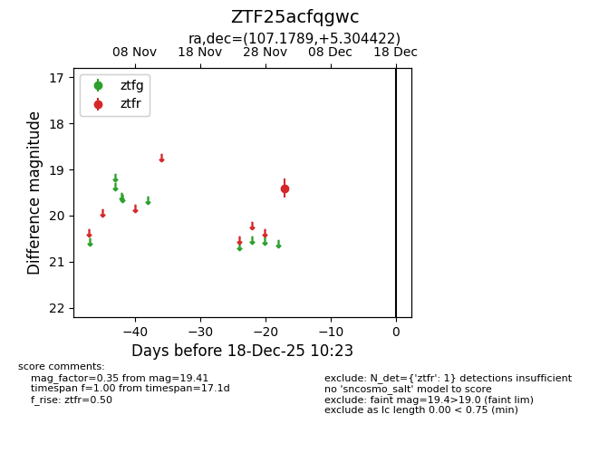
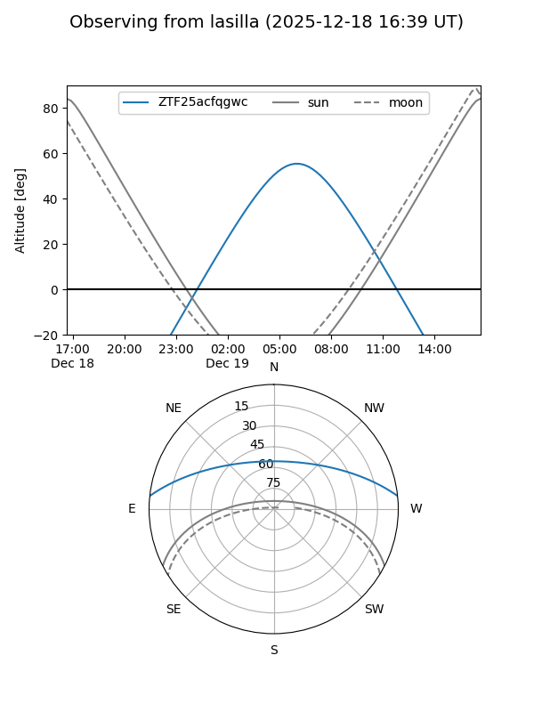
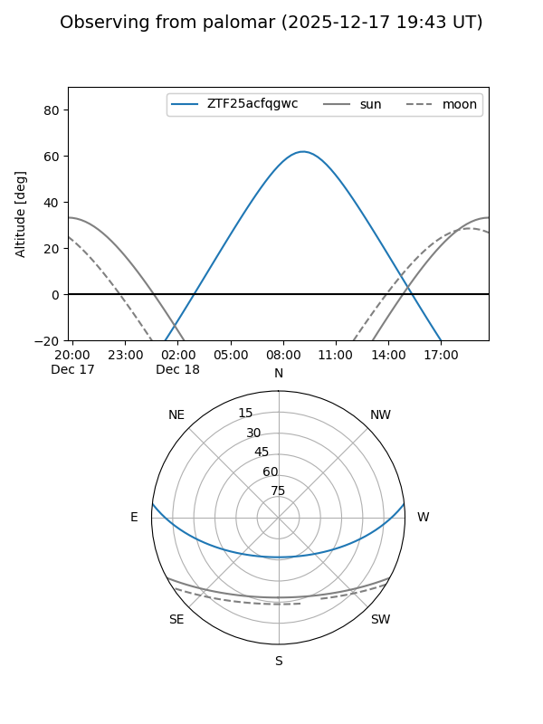

ZTF25acfqgwc
Target ZTF25acfqgwc at 2025-12-18 11:17
Aliases and brokers:
FINK: fink-portal.org/ZTF25acfqgwc
Lasair: lasair-ztf.lsst.ac.uk/objects/ZTF25acfqgwc
ALeRCE: alerce.online/object/ZTF25acfqgwc
alt names
ZTF25acfqgwc (ztf,fink_ztf)
Coordinates:
equatorial (ra, dec) = 107.1789,+5.30442
equatorial (HMS+DMS) = 07:08:42.93,+05:18:15.92
galactic (l, b) = (210.1595,+6.25179)
Photometry
last ztfr=19.41
1 ztfr detections
Lightcurve

Visibility


Additional plots